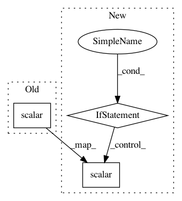

cdab60e331b42dfbb77c143595d337e3e0e279a8,ludwig/features/timeseries_feature.py,TimeseriesOutputFeature,build_output,#TimeseriesOutputFeature#Any#Any#Any#Any#Any#,249
Before Change
output_tensors[TRAIN_MEAN_LOSS + "_" + self.name] = train_mean_loss
output_tensors[EVAL_LOSS + "_" + self.name] = eval_loss
tf.compat.v1.summary.scalar(TRAIN_MEAN_LOSS + "_" + self.name, train_mean_loss)
// ================ Measures ================
(
error_val,
After Change
output_tensors[ABSOLUTE_ERROR + "_" + self.name] = absolute_error_val
output_tensors[R2 + "_" + self.name] = r2_val
if "sampled" not in self.loss["type"]:
tf.compat.v1.summary.scalar(
"batch_train_mean_squared_error_{}".format(self.name),
tf.reduce_mean(squared_error)
)
tf.compat.v1.summary.scalar(
"batch_train_mean_absolute_error_{}".format(self.name),
tf.reduce_mean(absolute_error)
)
tf.compat.v1.summary.scalar(
"batch_train_mean_r2_{}".format(self.name),
tf.reduce_mean(r2)
)
// ================ Loss ================
train_mean_loss, eval_loss = self._get_loss(
targets,
predictions_sequence
)
In pattern: SUPERPATTERN
Frequency: 6
Non-data size: 3
Instances
Project Name: uber/ludwig
Commit Name: cdab60e331b42dfbb77c143595d337e3e0e279a8
Time: 2020-02-01
Author: piero@uber.com
File Name: ludwig/features/timeseries_feature.py
Class Name: TimeseriesOutputFeature
Method Name: build_output
Project Name: MaybeShewill-CV/CRNN_Tensorflow
Commit Name: 9bd167b4a32ce12db4e2d546bff733e98542c5e7
Time: 2018-09-19
Author: debenito@unternehmertum.de
File Name: tools/train_shadownet.py
Class Name:
Method Name: train_shadownet
Project Name: tensorflow/tensorboard
Commit Name: ba2ef0a2dac5881f37f81a55f17e18b7f9008416
Time: 2017-08-15
Author: wchargin@gmail.com
File Name: tensorboard/plugins/scalar/scalars_plugin_test.py
Class Name: ScalarsPluginTest
Method Name: generate_run
Project Name: galeone/dynamic-training-bench
Commit Name: f302eba7375d8da3477816a705c7ce628f9a55a8
Time: 2017-05-12
Author: nessuno@nerdz.eu
File Name: dytb/trainer/Trainer.py
Class Name: Trainer
Method Name: train
Project Name: NVIDIA/OpenSeq2Seq
Commit Name: fd5c54dfd76d06569d615634526eb631aab1d05f
Time: 2018-05-02
Author: igor.a.gitman@gmail.com
File Name: open_seq2seq/optimizers/optimizers.py
Class Name:
Method Name: optimize_loss
Project Name: wenwei202/iss-rnns
Commit Name: a909fb05f352255c75dec4f4110acab0573f0b64
Time: 2017-06-20
Author: weiwen.web@gmail.com
File Name: basic/model.py
Class Name: Model
Method Name: _build_sparsity